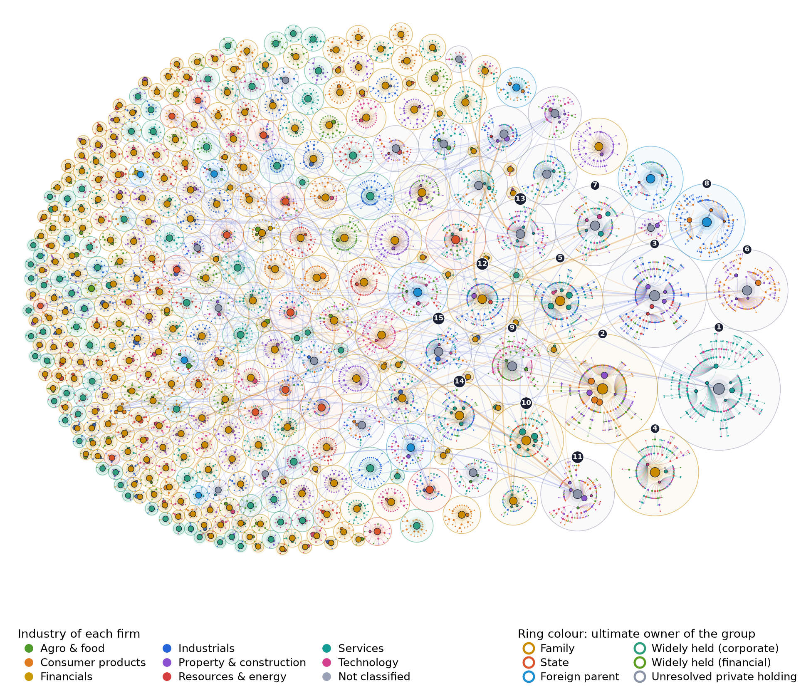

1 Introduction
Business groups dominate private economic activity in many emerging economies (Khanna and Yafeh 2007; Morck et al. 2005). In Thailand, a small number of family conglomerates, state enterprises and bank-centred groups have shaped capital accumulation since the mid-twentieth century (Suehiro 1989), and the 1997 crisis restructured rather than dissolved them (Polsiri and Wiwattanakantang 2006; Phongpaichit and Baker 2008). Who owns whom therefore matters for questions as different as competition in retail and telecommunications, the protection of minority shareholders, and the exposure of banks to a handful of borrowers.
Measuring groups is hard because a group is not a legal entity. It is defined by control relationships that run through listed and unlisted companies, Thai and foreign registries, and nominee or depositary accounts. Existing evidence for Thailand relies on samples of listed firms and their largest shareholders (Claessens et al. 2000; Wiwattanakantang 2001). The unlisted layer, where most subsidiaries and the holding companies at the top of each group sit, remains largely unmapped.
This paper builds an open and reproducible map of that layer and uses it to answer three questions. RQ1: Who ultimately controls Thai listed firms and the subsidiaries beneath them, and how many groups are there? RQ2: How far do control rights diverge from cash-flow rights, and how deep are the pyramids? RQ3: How are financial institutions connected to business groups through ownership, shared directors and fund holdings?
We make three contributions. First, coverage: the network includes every subsidiary, associate and joint venture that listed firms are required to disclose, plus the private holding companies above them. Second, measurement: a two-stage ultimate-owner algorithm handles cross-holdings and cycles, aggregates family members, and excludes depositary, custodian and fund accounts that hold shares without controlling them. Third, a description of the finance–business nexus that combines three kinds of links. Section 2 describes the disclosure regime, Section 3 the data, Section 4 the measures, Section 5 the results and Section 6 the limitations.
2 Institutional background
2.0.0.1 Listed companies.
Since fiscal year 2021, listed companies file an annual registration statement and annual report combined as the Form 56-1 One Report. It contains a chart and a list of the group’s shareholding structure, and the notes to the financial statements report investments in subsidiaries, associates and joint ventures with direct and effective ownership percentages. The Stock Exchange of Thailand (SET) publishes the ten largest shareholders of each company at the latest book-closing date, and holders must report to the Securities and Exchange Commission (SEC) whenever their stake crosses a multiple of 5% (Form 246-2).
2.0.0.2 Depositary receipts and nominees.
Thai NVDR Co., Ltd., a subsidiary of the SET, issues non-voting depositary receipts and therefore appears among the largest shareholders of many companies without exercising control. Foreign custodians and nominee accounts also appear under their own names. Treating either as an owner would overstate dispersed and foreign ownership, so we exclude both from the set of possible controllers.
2.0.0.3 Private companies.
Private limited companies file a shareholder list (form BOJ.5) and audited financial statements with the Department of Business Development (DBD) every year. Each company has a 13-digit registration number that also serves as its tax identification number, which we use to link records across sources.
2.0.0.4 Financial groups.
The Bank of Thailand supervises banks on a consolidated basis as financial business groups, and banks typically disclose the composition of their group in Pillar 3 reports. Several groups now operate through a holding company above the bank (for example SCB X since 2022), so the bank is not always the apex.
2.0.0.5 Foreign ownership.
Under the Foreign Business Act B.E. 2542 (1999), a company in which foreigners hold half or more of the shares is treated as foreign for restricted businesses. Some firms therefore combine a Thai majority of shares with voting arrangements or preference shares that give control elsewhere. Share percentages are thus a lower bound on the complexity of control, a point we return to in Section 6.
3 Data
Table 1 lists the sources and Table 2 reports coverage. Shareholdings are as of 2026-03-31 and subsidiary lists come from fiscal year 2025 reports. Subsidiary tables were extracted from the One Report PDFs with a large language model instructed to copy, not infer, every row; low-confidence rows and a random share of documents were checked by hand. Names were normalised (legal forms, titles, Thai PDF glyph artefacts) and matched with exact keys, registration numbers and a conservative fuzzy rule whose borderline cases were reviewed manually. When two sources report the same link we keep, in order, DBD shareholder lists, SET registers and direct holdings in the One Report; effective holdings are used only when no direct figure is available.
Table 1. Public data sources
| Source | Content used | Layer of the network |
|---|---|---|
| SET company pages | Top-10 shareholders at the latest book-closing date; sector; market value | Owners of listed firms |
| Form 56-1 One Report | Shareholding-structure section; notes on investments in subsidiaries, associates and joint ventures | Subsidiaries of listed firms |
| SEC Form 246-2 | Acquisitions and disposals crossing each 5% threshold | Changes in large stakes |
| DBD (BOJ.5 and statements) | Shareholder lists and investment notes of private companies | Private holding companies |
| Bank Pillar 3 reports | Composition of the financial business group | Bank groups |
| GLEIF Level 2 | Direct and ultimate accounting parents of LEI holders | Cross-check |
| Licence registers | Banks, securities, asset-management and insurance licences | Financial-institution flags |
Table 2. Coverage of the network
| Count | |
|---|---|
| Listed companies in the universe | 527 |
| with top-10 shareholder data | 527 |
| with extracted subsidiary disclosures | 493 |
| Entities in the network | 12,063 |
| companies registered in Thailand | 7,244 |
| companies registered abroad | 782 |
| persons (before family aggregation) | 3,485 |
| Families after aggregation | 2,783 |
| Ownership links | 13,267 |
| Board seats / distinct directors | 3,019 / 943 |
| GLEIF parent relationships | 42 |
4 Measurement
4.0.0.1 Network.
Let be the fraction of entity ’s shares held directly by entity , and the matrix of these weights. Persons sharing a surname are aggregated into a family node, a reasonable default in Thailand where surnames are registered and rarely shared by unrelated families; a manual mapping overrides it.
4.0.0.2 Cash-flow rights.
The share of ’s profits accruing to through all chains is the element of which remains well defined with cross-holdings (Brioschi et al. 1989).
4.0.0.3 Control rights.
Following La Porta et al. (1999) and Claessens et al. (2000), control along a chain is set by its weakest link. We apply the rule block by block, so that one block of votes is never counted twice: where is the set of direct shareholders of . Nodes on ownership cycles (3 cycles in the data) are solved by fixed-point iteration.
4.0.0.4 Ultimate owners and groups.
In a first stage, the candidate owners are terminal nodes: families, persons, state bodies, the Crown Property Bureau, foreign parents and private companies whose own shareholders are unknown. Thai NVDR, custodians, funds and state investment funds (such as the Social Security Office) are excluded. A firm’s ultimate owner is the candidate with the largest control right at or above the threshold (20% in the main specification; 10% and 50% as robustness). Firms without one are widely held; in a second stage, firms they control are assigned to them, which separates “widely held corporation” and “widely held financial” apexes as in La Porta et al. (1999). A group is the set of firms sharing an ultimate owner. For firms controlled by the state or the Crown Property Bureau, groups are defined one level down, at the top firm (for example an energy or airport holding), because merging all state enterprises into one group would hide their separate structures; ultimate-owner shares are unaffected by this choice.
4.0.0.5 Pyramids and the wedge.
The depth of a firm is the length of the shortest control chain from its ultimate owner along links controlled at or more. A firm sits in a pyramid when its depth is two or more. The wedge is (Claessens et al. 2000; Almeida and Wolfenzon 2006).
4.0.0.6 Finance–business nexus.
A bank group is linked to a business group through (i) ownership of at least 1% in either direction, (ii) a person on the board of a financial institution in the bank group and on a board in the business group (Mizruchi 1996), or (iii) funds managed by the bank group’s asset-management company holding shares in the business group’s listed firms.
5 Results
5.1 The map
Figure 1 draws every group with at least three firms. The largest, Aster Group, controls 363 firms in 2 SET industries, and the most diversified group spans 6 industries. 46 groups control two or more listed firms; together they account for 23.5% of listed firms. The network is highly connected: the largest weakly connected component contains 99.9% of all entities. Figure 6 shows the full control tree of the largest group.

5.2 Who controls listed firms
Table 3 and Figure 2 report ultimate owners. At the 20% threshold, the most common ultimate owner is the family category; families control 63.4%, the state 4.2%, foreign parents 3.2% and the Crown Property Bureau 0.0% of listed firms, while 17.5% are widely held. A residual 11.8% ends at private holding companies whose shareholders are not yet in the data; they are the priority for further DBD requests. At the 10% threshold, the family share is 63.6%.
Table 3. Ultimate owners of listed firms (% of firms; last column weighted by market value)
| Ultimate owner | 10% | 20% | 50% | By value |
|---|---|---|---|---|
| Family | 63.6% | 63.4% | 14.0% | 73.0% |
| State | 4.2% | 4.2% | 0.6% | 2.0% |
| Foreign parent | 3.2% | 3.2% | 0.4% | 2.9% |
| Widely held (corporate) | 0.0% | 0.0% | 1.3% | 0.0% |
| Widely held (financial) | 0.0% | 0.0% | 0.2% | 0.0% |
| Unresolved private holding | 11.8% | 11.8% | 0.4% | 10.6% |
| Widely held | 17.3% | 17.5% | 83.1% | 11.4% |
5.3 Size and concentration of groups
Table 4 lists the largest groups. Group size is highly skewed (Figure 3): the ten largest groups by market value hold 38.6% of the market value of listed firms, and the Herfindahl–Hirschman index across groups is 450.
Table 4. The fifteen largest groups by number of firms
| # | Group | Ultimate owner | Firms | Listed | Abroad | Ind. | Depth |
|---|---|---|---|---|---|---|---|
| 1 | Aster Group | Unresolved private holding | 363 | 6 | 30 | 2 | 6 |
| 2 | Ember Group | Family | 290 | 6 | 34 | 3 | 5 |
| 3 | Garnet Group | Unresolved private holding | 258 | 5 | 18 | 4 | 6 |
| 4 | Yarrow Group | Family | 183 | 3 | 14 | 5 | 5 |
| 5 | Dahlia Group | Family | 176 | 6 | 24 | 5 | 5 |
| 6 | Willow Group | Unresolved private holding | 161 | 4 | 11 | 2 | 7 |
| 7 | Cobalt Group | Unresolved private holding | 155 | 5 | 21 | 5 | 5 |
| 8 | Sable Group | Foreign parent | 142 | 3 | 23 | 2 | 7 |
| 9 | Cedar Group | Unresolved private holding | 141 | 2 | 10 | 2 | 6 |
| 10 | Banyan Group | Family | 134 | 6 | 13 | 3 | 5 |
| 11 | Fjord Group | Unresolved private holding | 131 | 5 | 8 | 6 | 6 |
| 12 | Family Harborkul | Family | 119 | 2 | 10 | 4 | 5 |
| 13 | Falcon Group | Unresolved private holding | 118 | 3 | 9 | 4 | 6 |
| 14 | Xanthe Group | Family | 111 | 4 | 7 | 5 | 5 |
| 15 | Acacia Group | Unresolved private holding | 106 | 3 | 12 | 5 | 6 |
5.4 Pyramids and the separation of ownership and control
Among listed firms with an ultimate owner, 11.0% are held through pyramids. The mean wedge between control and cash-flow rights is 2.4 percentage points (median 0.0), and the mean ratio of cash-flow to control rights is 0.93. Control chains reach 7 links; the average firm in the network sits 2.7 links below its ultimate owner (Figure 4). 6 firms belong to 3 ownership cycles.
5.5 The finance–business nexus
The data contain 58 financial institutions, including 6 banks, organised in 5 bank groups. We find 766 linked pairs of bank groups and business groups: 114 director links, 1 ownership links and 816 fund links. Bank groups share at least one director with 26.7% of business groups that have ten or more firms (Figure 5, Table 5). Fund links reflect portfolio investment by asset-management arms on behalf of unit holders, not control by the bank.
Table 5. Strongest bank–business group links
| Bank group | Business group | Own. | Dir. | Funds |
|---|---|---|---|---|
| Family Alphawong | Dahlia Group | 0 | 1 | 5 |
| Gamma Financial Group Inc. (J… | Aster Group | 0 | 1 | 4 |
| BET1 (Beta Bank) | Garnet Group | 0 | 0 | 4 |
| Family Alphawong | Harbor Group | 0 | 1 | 3 |
| KAP1 (Kappa Bank) | Lumen Group | 0 | 1 | 3 |
| Saffron Group | Dahlia Group | 0 | 1 | 3 |
| KAP1 (Kappa Bank) | Banyan Group | 0 | 1 | 3 |
| Family Alphawong | Rowan Group | 0 | 0 | 3 |
| KAP1 (Kappa Bank) | Raven Group | 0 | 2 | 1 |
| Gamma Financial Group Inc. (J… | Yarrow Group | 0 | 0 | 3 |
5.6 Robustness and validation
Table 6 recomputes ultimate owners at alternative thresholds, without family aggregation, and treating state investment funds as owners. GLEIF reports 42 parent relationships for Thai entities in our data; the network agrees with 100.0% of them (same group or an ownership path from parent to child). A random sample of listed firms (review/validation_sample.csv) awaits manual checking; its accuracy will be reported here.
Table 6. Robustness: ultimate owners of listed firms under alternative specifications (% of firms)
| Ultimate owner | 10% | 20% | 50% | No family agg. | State funds as owners |
|---|---|---|---|---|---|
| Family | 63.6% | 63.4% | 14.0% | 53.5% | 63.4% |
| State | 4.2% | 4.2% | 0.6% | 4.2% | 4.2% |
| Foreign parent | 3.2% | 3.2% | 0.4% | 3.2% | 3.2% |
| Widely held (corporate) | 0.0% | 0.0% | 1.3% | 0.0% | 0.0% |
| Widely held (financial) | 0.0% | 0.0% | 0.2% | 0.0% | 0.0% |
| Unresolved private holding | 11.8% | 11.8% | 0.4% | 11.8% | 11.8% |
| Widely held | 17.3% | 17.5% | 83.1% | 27.3% | 17.5% |
6 Discussion and limitations
Four limitations bound the interpretation. First, chains that leave Thailand through holding companies registered abroad stop at the border unless the foreign parent is itself disclosed, so foreign ultimate owners may be intermediate vehicles. Second, nominee shareholders and voting agreements are invisible in share registers; control can be stronger, or held by different people, than the percentages suggest. Third, surname-based family aggregation can merge unrelated people who share a surname or split families whose members use different surnames; the manual mapping and the robustness table address this only in part. Fourth, sources differ in their reference dates (book closing, fiscal year end, annual general meeting), so the network is a snapshot assembled from several dates within one year. Accounting control under TFRS 10 can also differ from the share-based definition used here.
Within these limits, the map supports descriptive conclusions about the reach of groups, the use of pyramids and the ties between banks and business groups. Causal questions, such as whether pyramids are associated with lower minority shareholder value (Bertrand et al. 2002; Masulis et al. 2011), require panel data across years and are left for future work.
7 Conclusion
Built entirely from public disclosures, this map shows how Thai business groups extend from a few ultimate owners through listed firms into thousands of unlisted subsidiaries, and how banks connect to them. Because every step of the pipeline is scripted, the map can be rebuilt each year and extended, for example to study changes in group structure, related-party transactions or market concentration.
A Reproducing the results
pip install -e . # or: make setup
python -m tbg init # create folders and blank input files
python -m tbg collect set-universe # or place the SET list in data/raw/universe/
python -m tbg extract pages --kind subsidiaries
python -m tbg extract run --kind subsidiaries --batch
python -m tbg extract collect-batch --kind subsidiaries
python -m tbg collect gleif
python -m tbg all # build, analyze, figures, explorer, paper